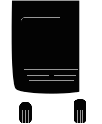

Some text here describing what we need to capture pre-border wise
Download our app and we’ll send you a notice if it’s about to rain in the next 20 minutes around your current location. A good rain can be refreshing, but sometimes you just want to stay dry.
We’ve scoured the entire planet for the best retreats and beautiful vistas. If there’s a corner of the world you want to escape to we know the most scenic and inspiring locations.
We only send you on trips to places we can personally vouch for as being amazing. Which means we’ve mapped out where local wi-fi spots are and marked them in our app’s map view.